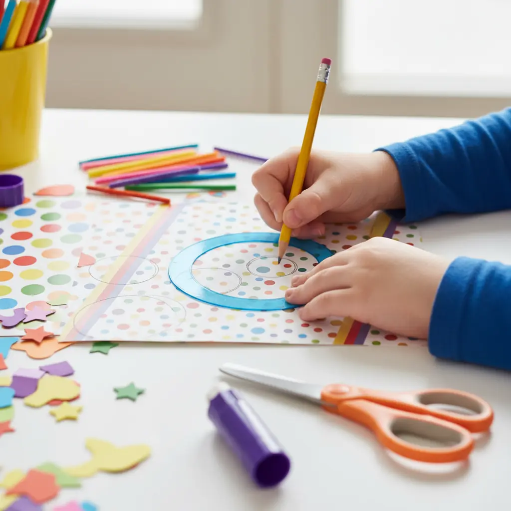
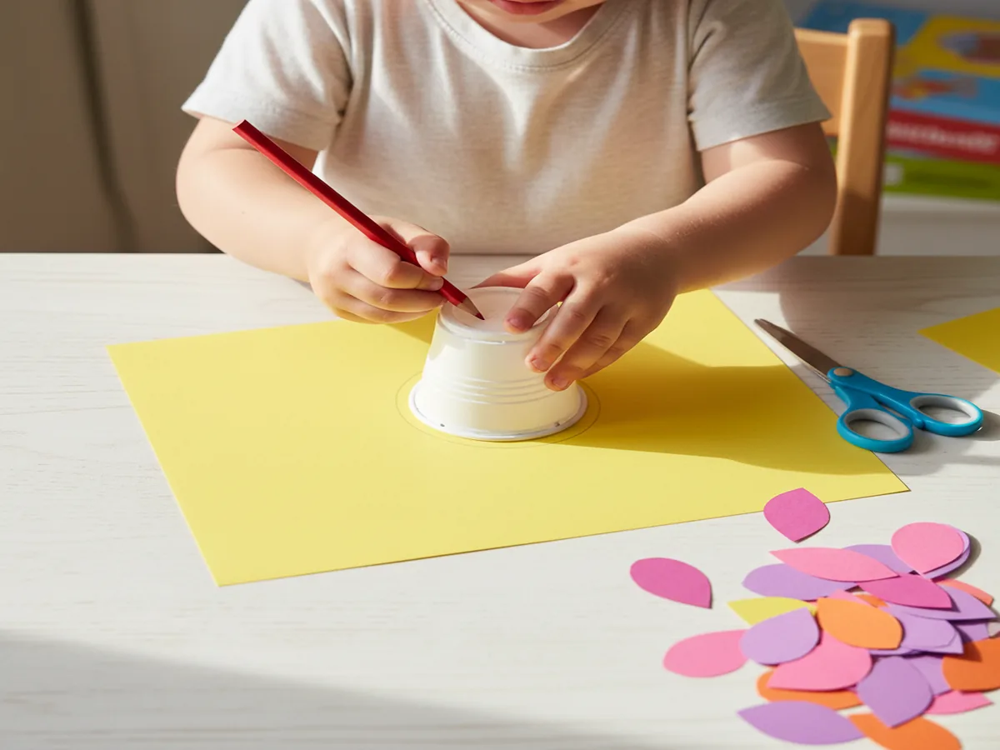
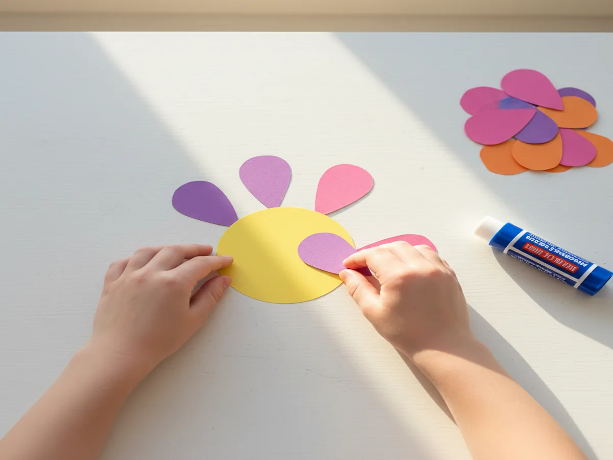
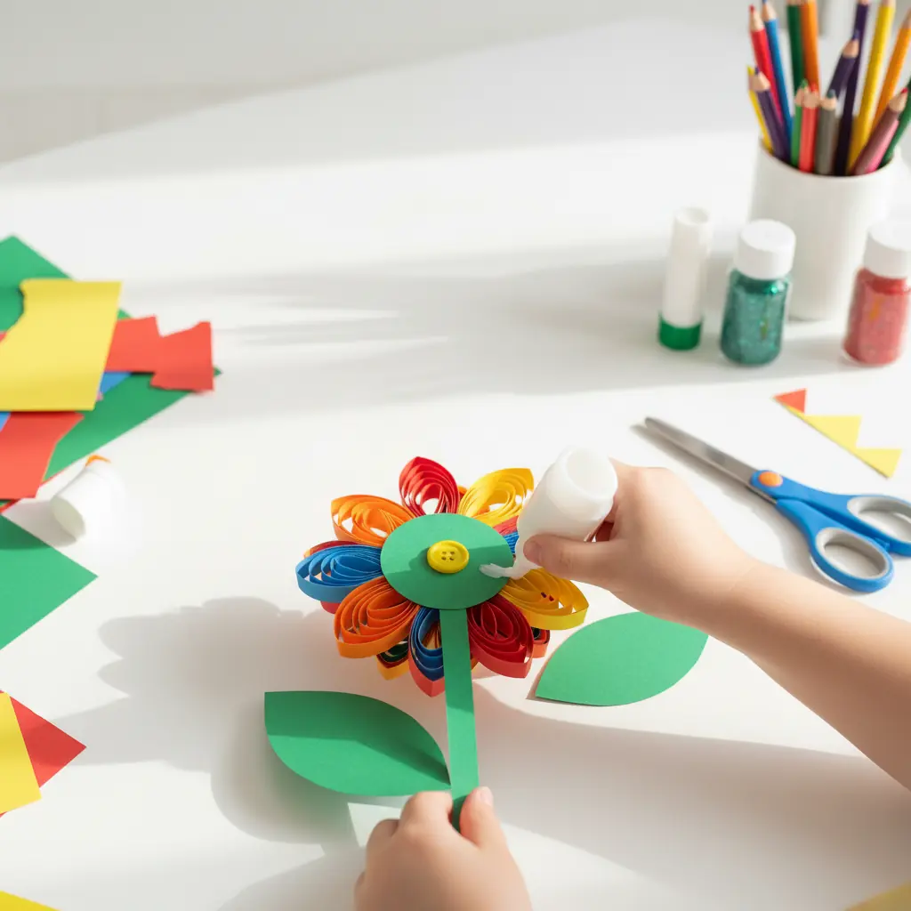
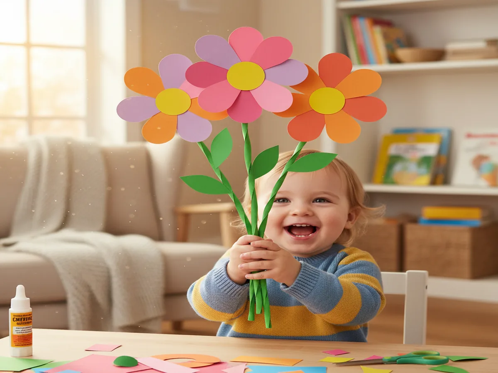

If there's one craft that never fails to make my kids beam with pride, it's a colorful paper flower craft. There's something magical about watching little hands cut, glue, and assemble petals into a bright, cheerful bloom they can gift to someone they love. Today I'm sharing our favorite easy paper flower craft for kids: simple enough for tiny toddler hands yet gorgeous enough to display on the mantel all spring long!
Why Kids Love This Craft
Kids are drawn to this construction paper flower craft because the results are instant and impressive. In just 15 minutes, they go from a stack of colorful paper to a beautiful bouquet they made all by themselves. That sense of accomplishment is huge for little ones who are still building confidence in their creative abilities. Plus, flowers come in every color of the rainbow, so there are zero rules and every combination looks amazing.
Beyond the fun factor, this paper flower craft for toddlers and preschoolers is packed with developmental goodness. Cutting along curved lines builds fine motor skills and scissor control. Choosing colors encourages decision-making and self-expression. And assembling petals around a center teaches early concepts of symmetry and patterns — it's basically a preschool curriculum disguised as a bouquet!
What You'll Need
Here's everything you need to get started. I've linked our favorite supplies so you can grab them quickly if you need to restock your craft stash!
- Assorted construction paper (9" × 12" sheets), at least 5–6 bright colors including green for stems and leaves.
- Kids' safety scissors, one pair per child.
- Washable glue sticks, one per child — much less mess than liquid glue.
- Green chenille stems (pipe cleaners), 12-inch, one per flower for the stem.
- Large pom poms (1-inch, assorted colors), one per flower for the center.
- Yellow circle dot stickers (¾-inch), optional, for an easy flower center alternative.
- White paper doilies (6-inch), optional, for a fancy layered look.
- A pencil for tracing petal shapes (you already have one at home!).
- A flat table surface covered with newspaper or a craft mat for easy cleanup.
Step-by-Step Instructions
-
Step 1: Cut Out Your Petals
Choose 2–3 colors of construction paper for your flower petals. Fold a sheet in half and draw a simple rounded petal shape (think a big teardrop or half-oval, about 3 inches tall). Cut along the line through both layers so you get two matching petals at once. Repeat until you have 5–7 petals per flower. For toddlers who aren't ready for scissors yet, pre-cut the petals and let little ones do all the assembling. If your child is a confident cutter (usually around age 4+), let them go for it — wobbly petals add charm!
💡 Tip: For ages 2–3, pre-cut all petals, circles, and leaves beforehand. Let your toddler focus on gluing and assembling — that's where the magic (and the learning!) happens.
-
Step 2: Make the Flower Center
Cut a circle from a contrasting color of construction paper, about 2 to 3 inches across — trace around a small cup or jar lid for a quick round shape. This circle is the base your petals will attach to and the "face" of your flower. If you'd rather skip the cutting, press one of those yellow dot stickers onto a slightly larger paper circle for a cute layered center. Or glue a fluffy pom pom right in the middle for a 3D effect that kids absolutely love to touch!

-
Step 3: Assemble the Petals
Turn your paper circle face-down and apply glue stick generously around the back edge. Arrange your petals around the circle, overlapping each one slightly, pressing the bottom tip of each petal onto the glued edge. Work your way around until the petals fan out like a sunburst. Flip the flower over — ta-da! If you're using a pom pom for the center, glue it right in the middle now and press for a few seconds.
💡 Tip: Apply glue to the circle, not to each individual petal. This keeps the process faster, less frustrating, and way less sticky for little fingers.
-
Step 4: Attach the Stem
Take a green pipe cleaner and tape or glue it to the back of your flower. If you prefer an all-paper version, cut a long strip of green construction paper (about 1 inch wide and 10–12 inches long) and glue it to the back instead. For extra stability, place a small square of paper over the spot where the stem meets the flower back and glue it down as a reinforcement patch — this keeps the stem from flopping!

-
Step 5: Add Leaves and Display Your Bouquet
Cut 1–2 simple leaf shapes from green construction paper — just a pointed oval roughly 2 inches long. Glue them onto the stem partway down. Now your flower is complete! Make 3–5 flowers in different colors and sizes, then gather them into a bouquet to gift to grandma, a teacher, or display in a mason jar on the kitchen table.
💡 Tip: For older kids (ages 6–8), challenge them to layer two sizes of petals, add fringe-cut edges, or curl petals around a pencil for a 3D effect. They can also write sweet messages on the leaves!
Variations to Try
Paper Plate Flower Craft: Use a small paper plate as the flower base instead of a paper circle. Kids can paint the plate any color, let it dry, and then glue petals around the rim. The plate adds sturdiness, making this version perfect as a paper flower craft for spring classroom displays or bulletin boards. You can even punch a hole at the top and thread a ribbon through for a hanging decoration!
Cupcake Liner Blooms: Swap the construction paper petals for colorful cupcake liners. Flatten 2–3 liners in graduating sizes, stack them, glue them together, and add a pom pom center. The ruffled edges of the liners look like real flower petals and require zero cutting, which is a dream for the youngest crafters. These are especially lovely in pastel colors for a spring or Mother's Day bouquet.
Handprint Flower Garden: Trace your child's hand on construction paper, cut it out, and curl the fingers gently around a pencil. Glue the handprint to a stem with the fingers fanning out as petals. Make several over the course of the year in different colors and you'll have a keepsake garden that also captures how much those little hands have grown. This variation turns a simple paper flower craft into a treasured memory!
More Crafts You'll Love
If your little ones enjoyed making paper flowers, they'll have a blast with these other easy crafts from our collection:
- Easy Paper Plate Ladybug Craft for Toddlers
- Easy Paper Plate Turtle Craft for Preschoolers (5 Simple Steps!)
Final Thoughts
This paper flower craft is one of those golden activities that works every single time, whether it's a rainy Tuesday afternoon, a classroom party, or a last-minute Mother's Day gift situation (been there, mama!). The supplies are simple, the cleanup is minimal, and the proud look on your child's face when they hand you a handmade bouquet? Absolutely priceless. I'd love to see what your family creates, so snap a photo of your finished flowers and share it on Pinterest: tag us or pin it to your favorite kids' craft board so other moms can find this project too! Happy crafting, friend! 🌸